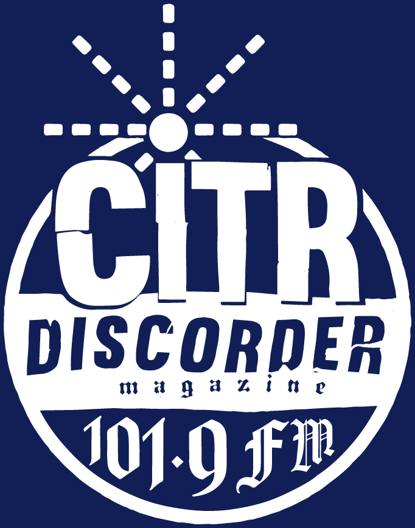
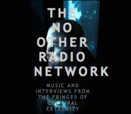
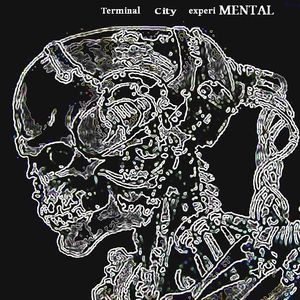
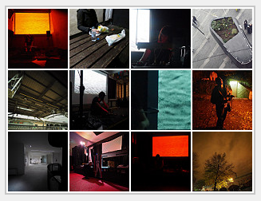
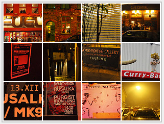
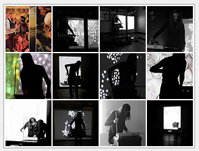

Performances Releases Store
Biography Pictures / Flyers Interviews
Artwork Reviews Contact
Kate Rissiek is a sound artist that has performed under the name Rusalka since 2007.
She is based on the Eastern Shore in Nova Scotia, Canada.

May 29th 2020
Rusalka Interview - A Noise Special
CITR 101.9 FM Vancouver
Archive Sound File


 
April 8th 2019 - Vancouver, BC
Terminal City Experimental
Live Collaboration with Whip of the UFO on No Fun Radio
Show Archive Link
2018 Europe Tour
Image and Video Galleries
SOUND SAMPLES

Twenty Sixteen Tour
UK and Europe Pictures
Rusalka 17.12.2016 in Tukikohta - Oulu, Finland
The Burrow CITR 101.9 Vancouver, B.C. - Episode September 12, 2016
Vancouver sound artist Kate Rissiek, aka Rusalka, joins as a guest host.
Music from machines, insects, spirits, and lastly, humans.

2015 Pacific Northwest Tour Pictures
Vancouver Noisefest V 18.04.2015
Vancouver Noisefest III 05.05.2013
Ende Tymes Festival 25.5.2013